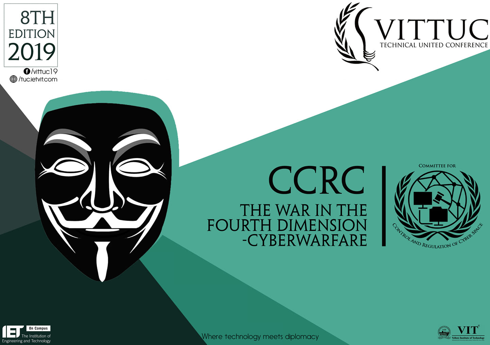
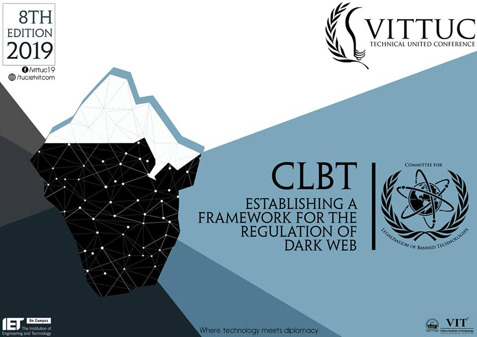
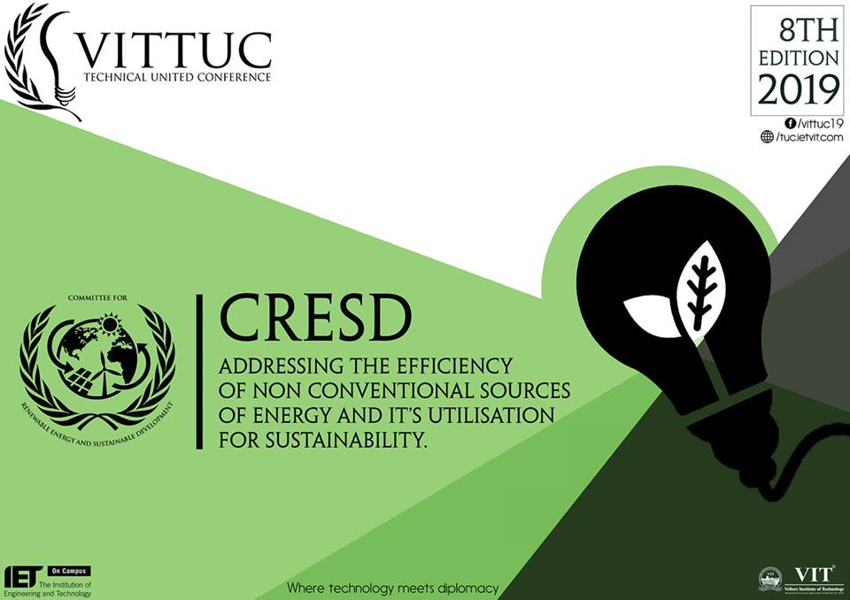
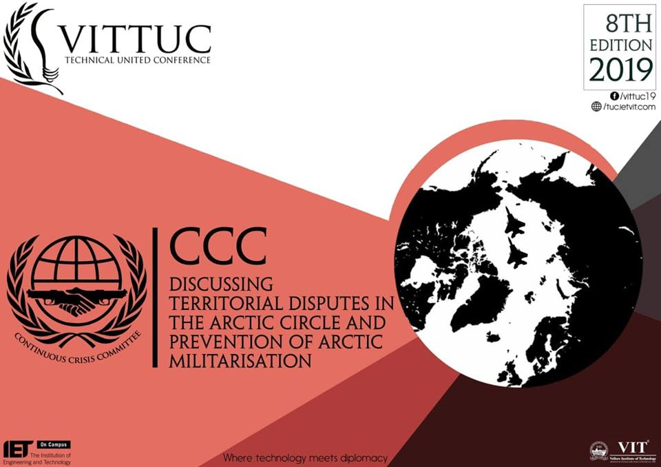

VITTUC 2019 Agendas
VITTUC 2019 Agendas
About Agendas Register Contact
 Advancement of technology at a rapid pace has yielded new forms of waging wars. With connectivity being constantly upgraded and computers integrating into our evryday life at an increasing speed, our dependency on technology and connectivity has grown drastically. And in this vulnerability, cyber attacks seek shelter. Motivated to gain information, deny service, sway public mentality in a desired direction supporting a political propaganda or even access your personal accounts. When it's targeted at an individual or a small group, its a common case of Cybercrime. But when the world nations and multinational companies get involved, it calls for The Committee for Control and Regulation of Cyberspace.
 As we stand today witnessing rising policies of anonymity on the Internet, we are always under the eyes of someone. Is absolute anonymity a fairy-tale? Clearly isn't. Welcome to the Dark Web. Absolutely no ears, no eyes, seriously. That's when it turns shady. As much a liberating tool it is, also is open doors to crime. Can we stop it? No we can't. Can we minimize it? Yes we can. This year, at the simulation for Committee for Legalization of Banned Technologies discuss "Establishing frameworks for the Regulation of Dark Web".
Humanity as we know it is changing rapidly. But is this change all for the better? With development at rates unheard of before and innovation in all spheres known to us, we seem to have forgotten what makes this progress possible - Earth. All this advancement comes at the cost of the decline of the environment and the world we live in. Nobody is a stranger to terms like climate change and global warming which makes our next committee, the Committee on Renewable Energy and Sustainable Development (CRESD) of paramount importance in the modern world. Discussing the feasibility and implementation of non-conventional sources of energy, this committee promises to be challenging and will keep you on your toes throughout the conference.
For the past decade or so, there has been one common objective for nearly every country in the world - Oil monopoly. So when speculations emerged about oil reserves in the Arctic, it came to no surprise that a multitude of nations began one of the most heated territorial disputes in today’s world. Who owns the Arctic? Presenting the final committee of the conference, the Continuous Crisis Committee (CCC), where a multifarious group of nations come together to resolve once and for all, this intense, exhilarating emerging crisis. Demanding the perfect balance between diplomacy and action, make sure to keep your thinking hats on, to face every dilemma thrown your way.